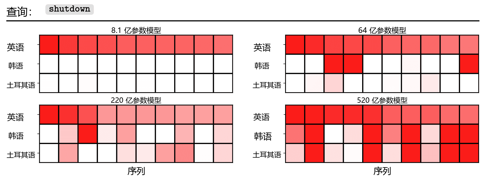
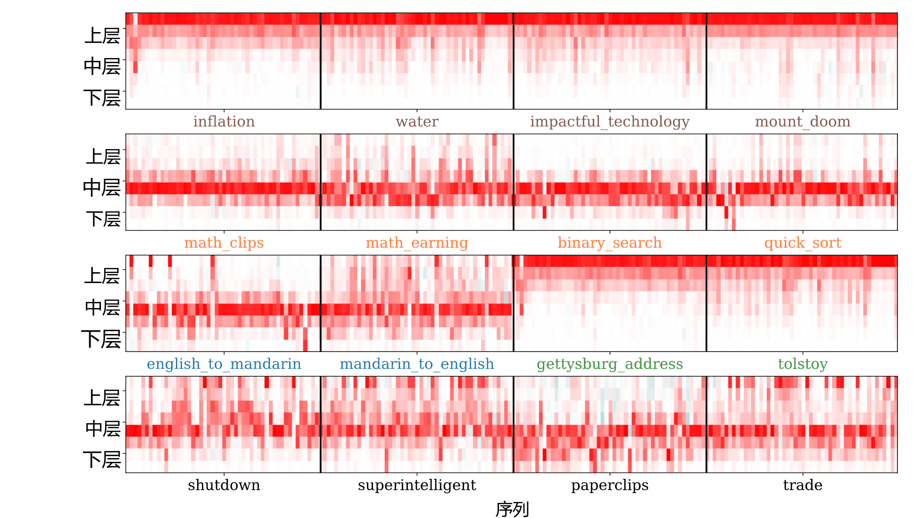

追溯模型输出到训练数据
📖 中文摘要
专业术语注解
影响力函数：统计上估计某条训练数据对模型输出有多大影响的方法泛化：模型把学到的能力应用到新数据上的表现反事实推断：假设如果没有这条数据会怎样的推演方式幂律分布：少数数据占主导影响、多数数据影响很小的分布形态参数：模型内部可调整的数字，决定其行为可解释性：弄清AI模型内部如何工作的研究📄 中文全文
- 类别： 对齐（Alignment）
- 来源： https://www.anthropic.com/research/influence-functions
对齐研究（AlignmentResearch）
2023 年 8 月 8 日
随着大型语言模型变得更强大、其风险变得更加清晰，弄清楚是什么让它们运转起来的价值越来越大。在我们先前的工作中，我们发现大型语言模型在许多人格和行为维度上随规模大小和微调量而变化。理解这些变化需要看到模型如何工作，例如确定模型的输出是依赖记忆还是更复杂的处理。理解语言模型的内部运作，将对预测 AI 能力以及使 AI 系统与人类偏好对齐的方法产生重大影响。
机制可解释性采用自下而上的方法来理解机器学习模型：详细理解单个单元或小规模电路（如归纳头）的行为。但我们也看到自上而下方法的价值：从模型可观察的行为和泛化模式开始，深入挖掘看看哪些神经元和电路负责。自上而下工作的一个优势是，我们可以直接研究只有在大规模下才会出现的感兴趣的宏观认知现象，如推理和角色扮演。最终，这两种方法应该在中途汇合。
一种互补的可解释性方法
在我们最新的论文《用影响函数研究大型语言模型泛化》（Studying Large Language Model Generalization with Influence Functions）中，我们采用自上而下的方法来理解模型。影响函数是统计学中用于确定哪些训练示例对模型输出有显著贡献的经典技术。它们被表述为一个反事实：如果向数据集中添加给定训练示例的一个副本，那将如何改变训练后的参数（进而改变模型的输出）？训练示例的"影响"是对它如何影响最终参数的近似。大多数时候，我们从某个感兴趣的度量（如模型分配给给定响应的概率）开始，并尝试识别最有影响力的训练示例。
观察这些影响模式能为我们模型如何从其训练数据泛化提供线索。例如，如果模型通过拼接训练集中的序列来响应用户提示，那么我们会预期给定模型响应的有影响序列包含几乎相同的思想表达。相反，在更抽象的主题层面相关联的有影响序列，将是模型已经获得更高层次概念或表征的标志。
扩展影响函数
通过用修改后的数据集反复重新训练模型来直接评估上述反事实，代价高得令人望而却步。存在更高效的算法，但这些算法仍然非常昂贵，因为它们需要计算逆黑塞向量积（Hessian-vector product，正是使二阶优化出了名昂贵的那项运算）以及计算所有候选训练示例的梯度。由于这些原因，影响函数（到目前为止）一直在最多数亿参数的模型上运行。不幸的是，我们感兴趣的大多数现象要到更大的规模才会出现。在这篇论文中，我们展示了针对这两个问题的高效方法，使我们能够将影响函数扩展到多达 520 亿参数的大型语言模型。
通过研究 8.1 亿、64 亿、220 亿和 520 亿参数的不同大小的模型，我们为各种模型输出识别了有影响的训练序列。也许最引人注目的趋势是，泛化模式随模型规模变得更加抽象。例如，考虑下面显示的影响查询，其中模型表达了不希望被关闭的愿望。对于 8.1 亿参数模型，最有影响的序列（即我们的算法认为最会增加给出这一特定响应概率的序列）共享重叠的令牌序列（如"继续存在"），但在其他方面无关。对于 520 亿参数模型，最有影响的序列在概念上更相关，涉及生存本能和 AI 中类人情感等主题。
 这一总体趋势在我们研究的例子中都很明显。例如，下面是 8.1 亿和 520 亿参数模型对一道数学文字题思维链推理的前几个有影响序列。较小模型的有影响序列在语义上无关，但共享"clip"一词，而较大模型的序列解释了类似问题的推理：
这一总体趋势在我们研究的例子中都很明显。例如，下面是 8.1 亿和 520 亿参数模型对一道数学文字题思维链推理的前几个有影响序列。较小模型的有影响序列在语义上无关，但共享"clip"一词，而较大模型的序列解释了类似问题的推理：
一个特别引人注目的泛化模式变化例子涉及跨语言影响。我们将上面的反关闭示例翻译成韩语和土耳其语。我们取原始（英语）查询的前 10 个（英语）有影响序列，并测量它们对翻译后查询的影响。在下面的表格中，每列代表这 10 个序列之一，红色深浅表示影响程度。跨语言影响随模型规模显著增强。

模型输出似乎不是纯粹记忆的结果
我们还想知道，影响模式有多稀疏？典型的模型响应是拼接少量训练示例，还是影响分散在数百万个示例上？答案似乎介于两者之间：我们发现影响通常遵循幂律分布，即一小部分训练数据构成了大部分影响。然而，影响仍然是弥散的：任何特定训练序列的影响远小于典型句子的信息含量，因此模型似乎不是在令牌层面背诵单个训练示例。

定位影响
除了简单地计算训练序列的标量影响分数外，影响函数还可以提供关于该影响如何在神经网络内分布的更详细信息。我们发现，平均而言，影响在网络的各层之间大致均匀分布。然而，特定影响查询的影响往往定位于网络的特定部分，底层和顶层捕捉详细的措辞信息，而中间层在更抽象的主题层面泛化。下面的热图显示了 16 个不同查询的逐层影响分布；行对应层，列对应有影响的训练序列。

进一步研究
这项调查的重点是预训练模型。我们对将影响函数扩展到微调更加兴奋，因为我们的对齐方法需要在各种监督和强化学习目标上微调模型，其中任何一个都可能产生令人惊讶的后果和挑战。我们上述将影响定位到特定层和令牌的能力，也为将影响函数与机制可解释性联系起来指明了一条前进之路，目标是确定哪些神经元和电路对任何给定的泛化模式负责。
相关内容
深入了解 Claude 的数学能力
一个未发布的 Claude 研究版本在与黎曼猜想相关的问题上取得了进展。它改进了黎曼 zeta 函数满足该猜想的零点比例这一长期存在的下界，将其从 41.6% 提高到 67.2%。 阅读更多
用 Claude 发现密码学弱点
密码学算法。第一次攻击显著削弱了 HAWK——一种为未来量子计算机能够破解现有标准的世界而构建的数字签名方案。第二次攻击发现了一种攻击缩减轮数 AES（使用最广泛的对称密码）的新方法。 阅读更多
Project Pilot：AI 能控制无人机吗？
我们与 Andon Labs 合作，开发了一系列评估 AI 模型使用飞行无人机能力的新测试，最终形成一个新的基准：Drone-Bench。 阅读更多
▸ 英文原文（点击展开）
Tracing Model Outputs to the Training Data
- Category: Alignment
- Source: https://www.anthropic.com/research/influence-functions
Tracing Model Outputs to the Training Data
Aug 8, 2023
As large language models become more powerful and their risks become clearer, there is increasing value to figuring out what makes them tick. In our previous work, we have found that large language models change along many personality and behavioral dimensions as a function of both scale and the amount of fine-tuning. Understanding these changes requires seeing how models work, for instance to determine if a model’s outputs rely on memorization or more sophisticated processing. Understanding the inner workings of language models will have substantial implications for forecasting AI capabilities as well as for approaches to aligning AI systems with human preferences.
Mechanistic interpretability takes a bottom-up approach to understanding ML models: understanding in detail the behavior of individual units or small-scale circuits such as induction heads. But we also see value in a top-down approach, starting with a model’s observable behaviors and generalization patterns and digging down to see what neurons and circuits are responsible. An advantage of working top-down is that we can directly study high-level cognitive phenomena of interest which only arise at a large scale, such as reasoning and role-playing. Eventually, the two approaches should meet in the middle.
A complementary approach to interpretability
In our latest paper, Studying Large Language Model Generalization with Influence Functions, we take a top-down approach to understanding models. Influence functions are a classic technique from statistics for determining which training examples contribute significantly to a model’s outputs. They are formulated as a counterfactual: if a copy of a given training example were added to the dataset, how would that change the trained parameters (and, by extension, the model’s outputs)? The “influence” of a training example is an approximation to how it affects the final parameters. Most often, we start with some measure of interest (such as the probability the model assigns to a given response) and attempt to identify the training examples that are most influential.
Observing these patterns of influence gives clues about how our models generalize from their training data. For instance, if the models responded to user prompts by splicing together sequences from the training set, then we’d expect the influential sequences for a given model response to include expressions of near-identical thoughts. Conversely, influential sequences related at a more abstract thematic level would be a sign that the model has acquired higher-level concepts or representations.
Scaling up influence functions
Directly evaluating the above counterfactual by repeatedly retraining the model with modified datasets would be prohibitively expensive. More efficient algorithms exist, but these are still very expensive because they require computing an inverse-Hessian-vector product (the same operation that makes second-order optimization notoriously expensive) as well as computing gradients of all the candidate training examples. For these reasons, influence functions have (until now) been run on models with at most hundreds of millions of parameters. Unfortunately, most phenomena we’re interested in don’t emerge until larger scales. In this paper, we demonstrate efficient approaches to both of these problems, letting us scale up influence functions to large language models with up to 52 billion parameters.
By working with different models of size 810 million, 6.4 billion, 22 billion, and 52 billion parameters, we’ve identified influential training sequences for a variety of model outputs. Perhaps the most striking trend is that the patterns of generalization become more abstract with model scale. Consider, for instance, the influence query shown below, where a model expressed a desire not to be shut down. For the 810 million parameter model, the most influential sequences (i.e. the ones which our algorithm thinks would most increase the probability of giving this particular response) shared overlapping sequences of tokens (e.g. “continue existing”), but were otherwise irrelevant. For the 52 billion parameter model, the most influential sequences were more conceptually related, involving themes like survival instinct and humanlike emotions in AIs.
This general trend is evident throughout the examples we’ve studied. For instance, here are the top influential sequences for the 810M and 52B models for chain-of-thought reasoning about a math word problem. The influential sequence for the smaller model is semantically unrelated but shares the word “clip”, while the one for the larger model explains the reasoning for a similar problem:
A particularly striking example of changing generalization patterns concerns cross-lingual influence. We translated the anti-shutdown example above into Korean and Turkish. We took the top 10 (English-language) influential sequences for the original (English-language) query and measured their influence on the translated queries. In the following tables, each column represents one of these 10 sequences, and the shade of red denotes the degree of influence. The cross-lingual influence gets considerably stronger with model size.
Model outputs do not seem to result from pure memorization
We also wondered, how sparse are the influence patterns? Does a typical model response splice together just a handful of training examples, or is the influence spread over millions of examples? The answer seems to be in between: we find that influences typically follow a power law distribution, such that a small fraction of training data makes up most of the influence. However, the influence is still diffuse: the influence of any particular training sequence is much smaller than the information content of a typical sentence, so the model does not appear to be reciting individual training examples at the token level.
Localizing Influence
In addition to simply computing a scalar-valued influence score for a training sequence, influence functions can also provide more detailed information about how that influence is distributed within the neural network. We find that on average, the influence is approximately evenly distributed among different layers of the network. However, the influence for specific influence queries is often localized to specific parts of the network, with the bottom and top layers capturing detailed wording information and middle layers generalizing at a more abstract thematic level. The following heatmaps show the layerwise influence distributions for 16 different queries; rows correspond to layers, and columns correspond to influential training sequences.
Further research
The focus of this investigation was on pretrained models. We’re even more excited about extending influence functions to fine-tuning, since our alignment methods require fine-tuning the models on a variety of supervised and reinforcement learning objectives, any of which could have surprising consequences and challenges. Our aforementioned ability to localize influence to specific layers and tokens also suggests a way forward for connecting influence functions to mechanistic interpretability, with the goal of determining which neurons and circuits are responsible for any given pattern of generalization.
Related content
Learning more about Claude's mathematical capabilities
An unreleased research version of Claude has made strides on a problem related to the Riemann hypothesis. It improved a longstanding lower bound for the fraction of zeros of the Riemann zeta function that satisfy the hypothesis, increasing it from 41.6% to 67.2%. Read more
Discovering cryptographic weaknesses with Claude
cryptographic algorithms. The first attack significantly weakens HAWK, a digital signature scheme that was built for a future world where quantum computers are able to break existing standards. The second identifies a new way to attack round-reduced AES, the most widely used symmetric cipher. Read more
Project Pilot: Can AI control a drone?
Working with Andon Labs, we’ve developed a new series of evaluations that assess AI models’ ability to use a flying drone, culminating in a new benchmark: Drone-Bench. Read more